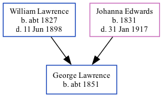

The child of William Lawrence (a harbour labourer) and Johanna EdwardsGeorge Lawrence, the great-great-uncle of Nigel Horne, was born in St Lawrence, Thanet, Kent, England c. 18511.
Throughout his life, he lived on Chapel Lane, St Lawrence, Thanet, Kent, England in 18611 and on 7 Apr 18612.
1861 England Census Online publication - Provo, UT, USA: The Generations Network, Inc., 2005.Original data - Census Returns of England and Wales, 1861. Kew, Surrey, England: The National Archives of the UK (TNA): Public Record Office (PRO), 1861. Data imaged from the National (Relation to Head of House: Son)
1861 England, Wales & Scotland Census - Findmypast (was age 10 and the son of the head of the household)
Family Tree

Map
Generated by ged2site. Last updated on Feb 19, 2025